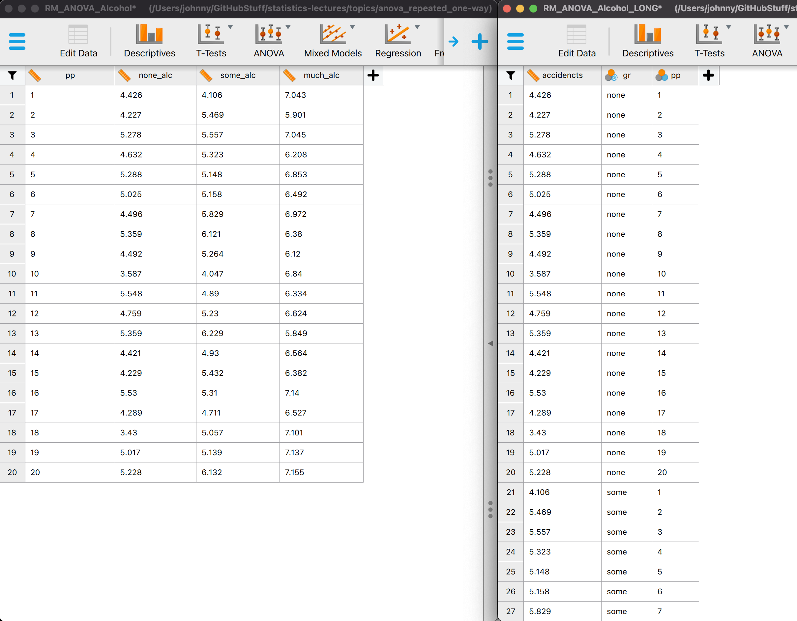
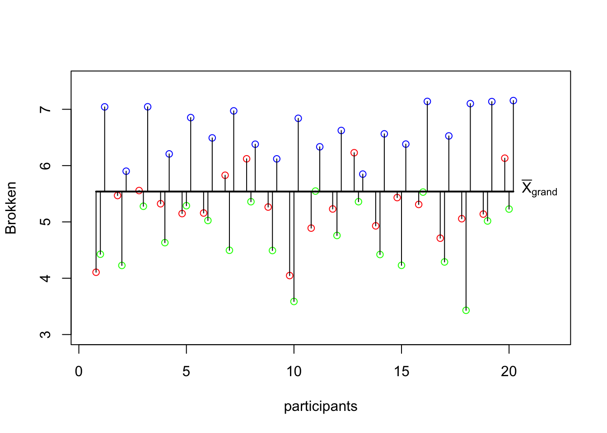
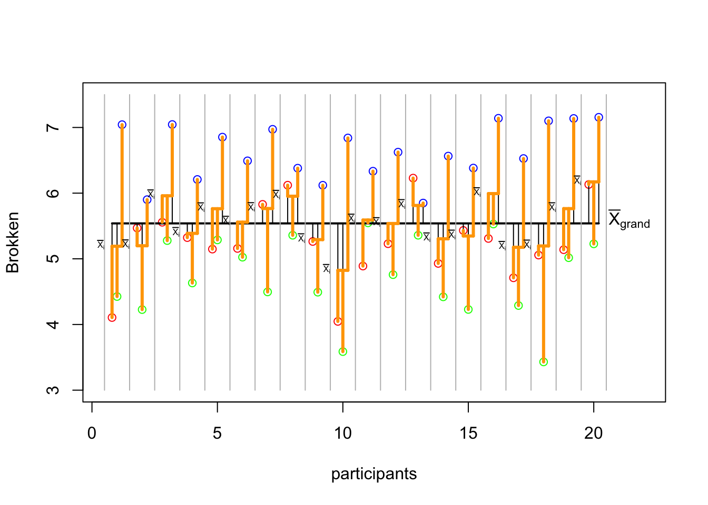
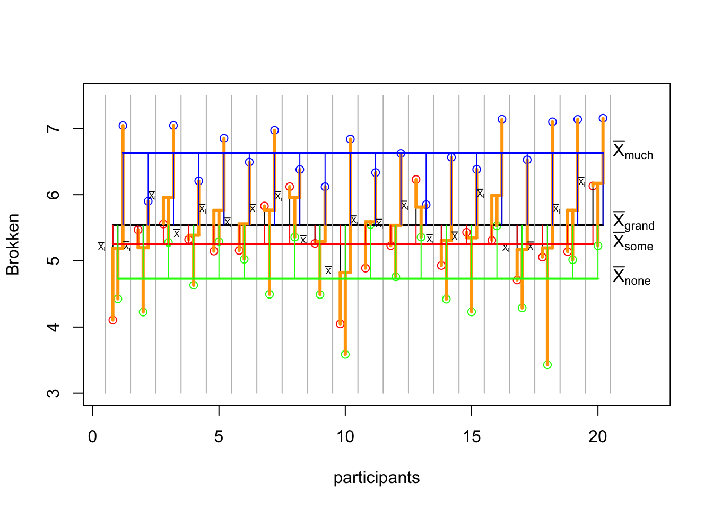
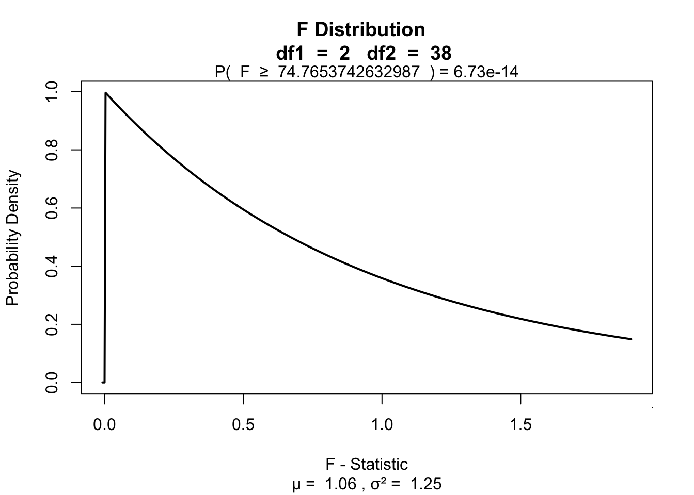

15. RM ANOVA
Repeated & Mixed
ANOVA
One-way repeated
One-way repeated measures ANOVA
The one-way repeated measures ANOVA analyses the variance of the model while reducing the error by the within person variance.
- 1 dependent/outcome variable
- 1 independent/predictor variable
- 2 or more levels
- All with same subjects
Assumptions
- Uni- or Multivariate
- Continuous dependent variable
- Normally distributed
- Shapiro-Wilk
- Q-Q plots
- Equality of variance of the within-group differences
- Mauchly’s test of Sphericity
- See Field 15.5, table 15.2 (p845), Jane Superbrain boxes 15.3 (p865) and 15.4 (p866)
- Always met when having only 2 groups
Formulas
| Variance | Sum of Squares | df | Mean Squares | F-ratio |
|---|---|---|---|---|
| Between | \({SS}_{{between}} = {SS}_{{total}} - {SS}_{{within}}\) | \({DF}_{{total}}-{DF}_{{within}}\) | \(\frac{{SS}_{{between}}}{{DF}_{{between}}}\) | |
| Within | \({SS}_{{within}} = \sum{s_i^2(n_i-1)}\) | \((n_i-1)n\) | \(\frac{{SS}_{{within}}}{{DF}_{{within}}}\) | |
| • Model | \({SS}_{{model}} = \sum{n_k(\bar{X}_k-\bar{X})^2}\) | \(k-1\) | \(\frac{{SS}_{{model}}}{{DF}_{{model}}}\) | \(\frac{{MS}_{{model}}}{{MS}_{{error}}}\) |
| • Error | \({SS}_{{error}} = {SS}_{{within}} - {SS}_{{model}}\) | \((n-1)(k-1)\) | \(\frac{{SS}_{{error}}}{{DF}_{{error}}}\) | |
| Total | \({SS}_{{total}} = s_{grand}^2(N-1)\) | \(N-1\) | \(\frac{{SS}_{{total}}}{{DF}_{{total}}}\) |
Where \(n_i\) is the number of observations per person and \(k\) is the number of conditions. These two are equal for a one-way repeated ANOVA. Furthermore \(n\) is the number of subjects per condition and \(N\) is the total number of data points \(n \times k\).
Example
Measure driving ability in a driving simulator. Test in three consecutive conditions where participants come back to attend the next condition.
- Alcohol none
- Alcohol some
- Alcohol much
The data
Data format in RM ANOVA: wide

MS total
# Assign to individual variables
none_alc <- data$none_alc
some_alc <- data$some_alc
much_alc <- data$much_alc
total <- c(none_alc,some_alc,much_alc)\({MS}_{total} = \frac{{SS}_{{total}}}{{DF}_{{total}}} = s_{grand}^2\)
MS_total <- var(total); MS_total[1] 0.9410458SS total
\({DF_{total}} = N-1\)
\({SS}_{{total}} = s_{grand}^2(N-1)\)
N <- length(total)
DF_total <- N - 1
SS_total <- MS_total * DF_total; SS_total[1] 55.5217sum((total - mean(total))^2)[1] 55.5217SS total visual


MS within
\({MS}_{within} = \frac{{SS}_{{within}}}{{DF}_{{within}}} \\ {DF}_{within} = (n_i-1)n\)
n.i <- 3 # Number of mesurements per individual (none, some, much)
n <- 20 # Number of mesurements per group
DF_within <- (n.i - 1) * n
DF_within[1] 40SS within
\({SS}_{{within}} = \sum{s_i^2(n_i-1)}\)
var_pp <- apply(cbind(none_alc, some_alc, much_alc),1,var)
ss_pp <- var_pp * (n.i - 1)
SS_within <- sum(ss_pp); SS_within[1] 48.45032mean_pp <- apply(cbind(none_alc, some_alc, much_alc),1,mean)
sum(c((none_alc - mean_pp)^2,
(some_alc - mean_pp)^2,
(much_alc - mean_pp)^2))[1] 48.45032SS within data
SS within visual

MS between
\({MS}_{between} = \frac{{SS}_{{between}}}{{DF}_{{between}}}\)
\({DF}_{between}-{DF}_{{within}} \\ {SS}_{between} = {SS}_{total} - {SS}_{within}\)
SS_between <- SS_total - SS_within
SS_between[1] 7.071382DF_between <- DF_total - DF_within
DF_between[1] 19MS model
\({MS}_{model} = \frac{{SS}_{{model}}}{{DF}_{{model}}} \\ {DF}_{model} = k-1\)
k <- 3
DF_model <- k - 1
DF_model[1] 2SS model
\({SS}_{model} = \sum{n_k(\bar{X}_k-\bar{X})^2}\)
# SS model
n_k1 <- length(none_alc)
n_k2 <- length(some_alc)
n_k3 <- length(much_alc)
# Calculate sums of squares for the model
SS_k1 <- n_k1 * (mean(none_alc) - mean(total))^2
SS_k2 <- n_k2 * (mean(some_alc) - mean(total))^2
SS_k3 <- n_k3 * (mean(much_alc) - mean(total))^2
SS_model <- sum(SS_k1, SS_k2, SS_k3)
SS_model[1] 38.63266SS model visual

MS error
\(\frac{{SS}_{error}}{{DF}_{error}}\)
\({DF}_{error} = (n-1)(k-1)\)
DF_error <- DF_within - DF_model
DF_error[1] 38SS error
\({SS}_{error} = {SS}_{within} - {SS}_{model}\)
SS_error <- SS_within - SS_model
SS_error[1] 9.817655F ratio
\(F = \frac{{MS}_{{model}}}{{MS}_{{error}}}\)
# Calculate mean squares
MS_model <- SS_model / DF_model
MS_error <- SS_error / DF_error
# Calculate F statistic
fStat <- MS_model / MS_error
fStat[1] 74.76537Visualize
library('visualize')
visualize.f(fStat, DF_model, DF_error, section="upper")
Contrast
Planned comparisons
- Exploring differences of theoretical interest
- Higher precision
- Higher power
Post-Hoc
Unplanned comparisons
- Exploring all possible differences
- Adjust T value for inflated type 1 error
Effect size
General effect size measures
- Amount of explained variance \(R^2\) also called eta squared \(\eta^2\).
- When going for explained variance, partial eta squared (\(\eta_p^2\)) is recommended instead of \(\eta^2\)
- Omega squared \(\omega^2\)
- Great overview of \(\eta^2\) vs \(\omega^2\)
Effect sizes of contrasts or post-hoc comparisons
- Cohen’s \(r\) gives the effect size for a specific comparison
- \(r_{Contrast} = \sqrt{\frac{t^2}{t^2+{df}}}\)
- \(r_{Contrast} = \sqrt{\frac{F(1,{df}_R)}{F(1,{df}_R)+{df}_R}}\)
ANOVA factorial repeated
Factorial repeated measures ANOVA
The factorial repeated measures ANOVA analyses the variance of the model while reducing the error by the within person variance.
- 1 dependent/outcome variable
- 2 or more independent/predictor variable
- 2 or more levels
- All with same subjects
Assumptions
Same as one-way repeated measures ANOVA
Example
In this example we will again look at the amount of accidents in a car driving simulator while subjects where given varying doses of speed and alcohol. But this time we lat participants partake in all conditions. Every week subjects returned for a different experimental condition.
- Dependent variable
- Accidents
- Independent variables
- Speed
- None
- Small
- Large
- Alcohol
- None
- Small
- Large
- Speed
| person | 1_1 | 1_2 | 1_3 | 2_1 | 2_2 | 2_3 | 3_1 | 3_2 | 3_3 |
|---|---|---|---|---|---|---|---|---|---|
| 1 | 1 | ||||||||
| 2 | 2 | ||||||||
| 3 | 3 | ||||||||
| 4 | 4 | ||||||||
| 5 | 5 | ||||||||
| 6 | 6 | ||||||||
| 7 | 7 | ||||||||
| 8 | 8 | ||||||||
| 9 | 9 |
Data
Mixed design ANOVA
Mixed design
The mixed ANOVA analyses the variance of the model while reducing the error by the within person variance.
- 1 dependent/outcome variable
- 2 or more independent/predictor variable with different subjects
- 2 or more levels
- 1 or more independent/predictor variable with same subjects
- 2 or more levels
Assumptions
Same as repeated measures ANOVA and same as factorial ANOVA.
Example
- Dependent variable
- Accidents
- Independent variables
- Speed (same subjects)
- None
- Small
- Large
- Alcohol (same subjects)
- None
- Small
- Large
- Gender
- Males
- Females
- Speed (same subjects)
| person | time | 1_1 | 1_2 | 1_3 | 2_1 | 2_2 | 2_3 | 3_1 | 3_2 | 3_3 |
|---|---|---|---|---|---|---|---|---|---|---|
| 1 | males | 1 | ||||||||
| 2 | males | 2 | ||||||||
| 3 | males | 3 | ||||||||
| 4 | males | 4 | ||||||||
| 5 | males | 5 | ||||||||
| 6 | males | 6 | ||||||||
| 7 | males | 7 | ||||||||
| 8 | males | 8 | ||||||||
| 9 | males | 9 | ||||||||
| 10 | females | 1 | ||||||||
| 12 | females | 2 | ||||||||
| 13 | females | 3 | ||||||||
| 14 | females | 4 | ||||||||
| 15 | females | 5 | ||||||||
| 16 | females | 6 | ||||||||
| 17 | females | 7 | ||||||||
| 18 | females | 8 | ||||||||
| 20 | females | 9 |
Data
End
Contact